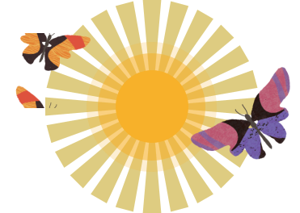

Here’s what you can expect after your organization signs the contract.
Kick Off
Share information about the study team’s goals and experience so that your Oracle Project Manager can tailor the training workshop to your organization.
User acceptance testing
Oracle builds the study to your specifications, whether you want to complete all study design work now or start randomizing right away and complete the rest of the design later.

Prepare to go live & go live
Specify study settings and other details for Training and Production modes. Then, press the On button for a study by activating sites.
Post go-live changes
Respond to protocol amendments and other requirements during the study conduct period.
Close Out
After sites enter all data and you verify that it’s clean, generate reports and submission PDFs in just a few clicks.
Every customer-delegated administrator who manages access to the Oracle Clinical One Platform must complete the following tasks.
Look for one or two emails from OracleIdentityManager@oracle.com with the following subject(s):
Everyone receives this email: Oracle Health Sciences Cloud – New Account
Some organizations also receive this email: Oracle Health Sciences Cloud – Account Password
You receive the email(s) after Oracle creates your Oracle Health Sciences single sign-on (SSO), typically within a week or two of your organization signing the contract.
Use the steps in the email(s) to activate your SSO in Oracle IAMS. Learn more
Frequently Asked Questions
What is HTML
Hypertext Markup Language (HTML) is a computer language that makes up most web pages and online applications. A hypertext is a text that is used to reference other pieces of text, while a markup language is a series of markings that tells web servers the style and structure of a document. HTML is very simple to learn and use.
What is CSS?
CSS stands for Cascading Style Sheets. It is the language for describing the presentation of Web pages, including colours, layout, and fonts, thus making our web pages presentable to the users. CSS is designed to make style sheets for the web. It is independent of HTML and can be used with any XML-based markup language. CSS is popularly called the design language of the web.
What is JavaScript?
JavaScript is a scripting or programming language that allows you to implement complex features on web pages — every time a web page does more than just sit there and display static information for you to look at — displaying timely content updates, interactive maps, animated 2D/3D graphics, scrolling video jukeboxes, etc. — you can bet that JavaScript is probably involved. It is the third of the web trio.
What is React?
React is a JavaScript library created for building fast and interactive user interfaces for web and mobile applications. It is an open-source, component-based, front-end library responsible only for the application’s view layer. In Model View Controller (MVC) architecture, the view layer is responsible for how the app looks and feels. React was created by Jordan Walke, a software engineer at Facebook.
What is PHP?
PHP is a server-side and general-purpose scripting language that is especially suited for web development. PHP originally stood for Personal Home Page. However, now, it stands for Hypertext Preprocessor. It’s a recursive acronym because the first word itself is also an acronym.
What is Node JS?
Node.js is an open-source, cross-platform, back-end JavaScript runtime environment that runs on the V8 engine and executes JavaScript code outside a web browser. Node.js lets developers use JavaScript to write command line tools and for server-side scripting—running scripts server-side to produce dynamic web page content before the page is sent to the user's web browser. Consequently, Node.js represents a "JavaScript everywhere" paradigm
Every person who manages access to Oracle Clinical One Platform: Make yourself a global user in Oracle Clinical One Platform. Give yourself the User Manager role.
One person who manages access to Oracle Clinical One Platform: Make your Oracle Project Manager a global user, and give them the Study Creator role.
One person who manages access to Oracle Clinical One Platform: Inform your project manager that they now have the Study Creator role so that they can create the study and the design consultant can start designing the study.
Create Oracle Health Sciences single sign-ons (SSOs) for the study team in Oracle IAMS.
Note: Oracle creates SSOs for people who manage access to Oracle Clinical One Platform, and they create SSOs for everyone else.
Ask another person who manages access to Oracle Clinical One Platform to approve the access requests. You can’t approve your own role assignments.
Read Instructions
Note: If your organization uses other Oracle products, review the approval requests carefully. For example, if you don’t manage access to Oracle InForm, don’t approve Oracle InForm requests.
Give yourself and the study team access to the study in Oracle Clinical One Platform. Read instructions.
Inform the study team that they can start signing in.
All users also receive an email that contains the product URL, the date when access begins, and the name of the study.
Look for an email from Alerts@clinicalone.oraclecloud.com with a subject of Access information for the study_name study in Clinical One.
Everyone receives this email after being assigned roles within a study. The email contains the product URL, the date when access begins, and the name of the study.
After your access begins, sign in to Oracle Clinical One Platform using your Oracle Health Sciences single sign-on.
Learn More.
You can start reviewing all aspects of your study design as soon as the study designer makes the study available for testing. Before the formal testing process even begins, you can collaborate with your Design Consultant to get answers to your questions and complete many of your user acceptance testing tasks prior to the start of formal testing.
Share updates with your Oracle Design Consultant.
Your Oracle Design Consultant can implement changes and share them with you using a quick drag-and-drop process.
Look for an email from your Oracle Project Manager or Design Consultant, informing you that Oracle completed verification of the study, and the study is ready for UAT.
Ensure that the study meets all acceptance criteria.
Look for an email from your Oracle Project Manager or Design Consultant, informing you that Oracle completed verification of the study, and the study is ready for UAT.
Ensure that the study meets all acceptance criteria.
After informing Oracle that the study will no longer be extended, look for an email from your Oracle Project Manager. The email contains information and resources about study close-out.
Your Project Manager also confirms the people who download the final study database (sometimes referred to as a PDB) and receive the final study documentation package.
Decommission the study, including obtaining your final reports, data extracts, and submission PDFs.
Caution: Don’t make any changes after running the final reports. Any changes won’t be captured in the reports. Read instructions
Read instructions.
You need this account to access My Oracle Support (MOS), Support Cloud, and Oracle Health Sciences Learn (home of assigned training courses). Coordinate the time with your Oracle Project Manager. Set up your Oracle account
Anyone who enters support tickets must specify a password for a Support Cloud account.
For example, a small group can create tickets for the entire organization, or everyone can create their own tickets.
To get help figuring out the right support model for your organization, talk to your Oracle Project Manager.
Determine whether you have a Support Cloud account for another Oracle Health Sciences product. If so, skip step B.
Specify your password for Support Cloud using one of the following steps:
People who manage access to Oracle Clinical One Platform: Look for the Welcome email from saas_provisioning@mailac.custhelp.com
with a subject of HSGBUCLINICALONE | Order # order_number | organization_name and the following first line:
Welcome to Oracle Cloud and thank you for purchasing Oracle’s products and services.
This email is typically sent within a day or two of the point of contact setting up the Oracle Cloud account.
Everyone else: After the people who manage access to Oracle Clinical One Platform receive the Welcome email (described above), open Support Cloud, and select Register.
If you need help:
Select Tutorial to watch a video.
At the bottom of the page, select Global Support Numbers, and then expand the section for Clinical One Cloud Service.
Specify a password for Support Cloud
Review the tasks that Oracle completes for you.
Learn more.
Understand how your changes could impact the people who manage access to other Oracle products.
Learn more.
Understand how to add more people who manage access to Oracle Clinical One Platform. All you need to do is enter a ticket in Support Cloud.
Every customer-delegated administrator who manages access to the Oracle Clinical One Platform must complete the following tasks.
Look for one or two emails from OracleIdentityManager@oracle.com with the following subject(s):
Everyone receives this email: Oracle Health Sciences Cloud – New Account
Some organizations also receive this email: Oracle Health Sciences Cloud – Account Password
You receive the email(s) after Oracle creates your Oracle Health Sciences single sign-on (SSO), typically within a week or two of your organization signing the contract.
Use the steps in the email(s) to activate your SSO in Oracle IAMS.
Learn more.
Create Oracle Health Sciences single sign-ons (SSOs) for the study team in Oracle IAMS.
Note: Oracle creates SSOs for people who manage access to Oracle Clinical One Platform, and they create SSOs for everyone else.
Ask another person who manages access to Oracle Clinical One Platform to approve the access requests. You can’t approve your own role assignments.
Read instructions.
Note: If your organization uses other Oracle products, review the approval requests carefully. For example, if you don’t manage access to Oracle InForm, don’t approve Oracle InForm requests.
Everyone must complete the following tasks. If you manage access to Oracle Clinical One Platform and already activated your Oracle Health Sciences single sign-on (SSO), you don’t need to activate it again.
Look for one or two emails from OracleIdentityManager@oracle.com with the following subject(s)
You receive the email(s) after a person who manages access to Oracle Clinical One Platform creates your SSO.
Use the steps in the email(s) to activate your Oracle Health Sciences SSO in Oracle IAMS.
Oracle SecureSites allows you to securely exchange documents with Oracle.
Look for an email from Oracle Content and Experience (no-reply@oracle.com) with a subject of SecureSites Admin has given you access to site organization_name.
You receive the email after your Oracle Project Manager gives you access to the study’s document folders in Oracle SecureSites.
Select the link in the email, and sign in to Oracle SecureSites using your Oracle single sign-on (SSO).
Note: Your Oracle SSO and your Oracle Health Sciences SSO are different. Your Oracle SSO is the account you use for Support Cloud. For more information, see Single sign-on accounts.
If you don’t see any files after signing in, use a different browser, such as Google Chrome.
Look for an email from saas_provisioning@mailac.custhelp.com with a subject of HSGBUCLINICALONE | Order # order_number | organization_name and the following first line:
Thank you for purchasing Oracle’s products and services. The organization_name Cloud Service is now available via the Service URL Below.
People who manage access to Oracle Clinical One Platform receive this email, typically within two or three days of receiving their account information for Oracle IAMS.
Find the URL for Oracle Clinical One Platform in the email, and sign in using your Oracle Health Sciences single sign-on.
Read instructions.
Make yourself a global user and give yourself the Study Creator role.
Read instructions.
Give yourself and the study team access to the study in Oracle Clinical One Platform.
Read instructions.
Inform the study team that they can start signing in.
All users also receive an email that contains the product URL, the date when access begins, and the name of the study.
Determine whether the study database has been created.
If you signed a contract for one study, the study database is already set up, and you can start testing it at any time.
If you signed a capacity contract, the study database is set up for the first study. For all other studies, you must enter a study provisioning ticket in Support Cloud so that the database can be created.
After the ticket is resolved, you can start testing the study.
Within 1 or 2 business days of submitting the ticket, look for an email from Oracle HSGBU Support (oracle_hsgbu_support@custhelp.com) with a subject of Support Incident incident number has been closed.
The person who entered the ticket, plus any additional contacts who were added to the ticket, receive this email after the study database is set up as part of the ticket.
Note: Expect a few emails related to the ticket.
After receiving the email, inform the study team that the study designer can start testing the study at any time.
Note: The study designer can start designing the study at any time, even before this ticket is entered and resolved.
Watch the short in-product training videos on your own.
Most videos are also available on the Oracle Help Center.
Build your expertise by learning best practices from an expert consultant during a training engagement.
Tip: To optimize your experience, schedule the training so that you can design the study soon after the training ends.
Look for an email from Alerts@clinicalone.oraclecloud.com with a subject of Access information for the study_name study in Clinical One.
Everyone receives this email after being assigned roles within a study. The email contains the product URL, the date when access begins, and the name of the study.
After your access begins, sign in to Oracle Clinical One Platform using your Oracle Health Sciences single sign-on.
Learn more.
Complete the study design. For help, check out and bookmark these resources:
While you’re designing your study, a mentoring engagement allows you to get help with all your questions, from getting a recap of best practices to reviewing your study design with an expert.
Before sharing the study with the study team, perform your own verification steps.
Tip: You can start testing the study only after the database has been created. If you’re not sure if the database has been created yet, talk to the person who manages access to
Oracle Clinical One Platform or your Oracle Project Manager.
Get the study ready for Testing mode. Use these resources for help:
After informing Oracle that the study will no longer be extended, look for an email from your Oracle Project Manager. The email contains information and resources about study close-out.
Your Project Manager also confirms the people who download the final study database (sometimes referred to as a PDB) and receive the final study documentation package.
Decommission the study, including obtaining your final reports, data extracts, and submission PDFs.
Caution: Don’t make any changes after running the final reports. Any changes won’t be captured in the reports.
Read instructions
Our global team is with you, sunrise to sunset, every day
Urgent issue? Create a Priority 1 or Priority 2 ticket. Specify the password for your Oracle single sign-on, and then you can create a ticket in Support.
Everyone can get help over the phone at any time. To find the phone number for your region, open Global Support numbers, and expand the entry for Clinical One Cloud Service.
Key Benefits
You can work faster than ever with everything in one place!
Connect with Oracle and other users and find links to useful resources in the Community.
Look for an email invitation from your Oracle Project Manager or trainer after your training workshop.
Be a Piloteer in Our Usability Program
Let’s talk about issues faced by sponsors as they run clinical trials and get early views of some of the future solutions that Oracle Health Sciences is exploring!
Join the conversation
Subscribe to announcementsAnnouncements inform you of new releases and product downtime.
Listen to our podcastEnjoy monthly episodes exploring innovation and human compassion in clinical research
Read our blogKeep up with industry trends and news from Oracle Health Sciences and guest authors
Follow us on socialJoin our LinkedIn and Twitter communities!